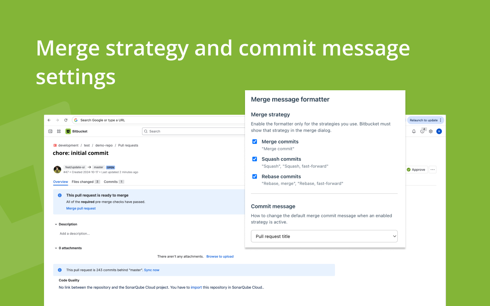
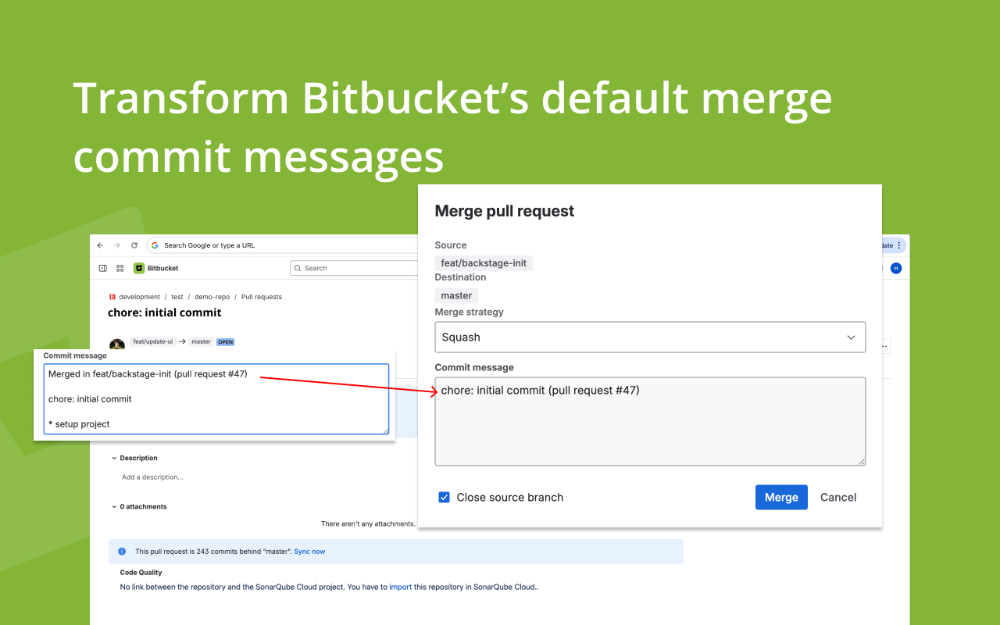

Message formats
Choose default Bitbucket text, PR title only, or title plus commit details—same options as in the app, stored in extension storage.
A browser extension that reformats Bitbucket’s default squash and merge text into a readable PR title and optional details—per merge strategy, with settings synced across popup and side panel.
On Bitbucket PR pages, when you open Merge pull request, the extension can replace Bitbucket’s “Merged in …” style message with your chosen format—only when the pattern matches, so unexpected text stays untouched.
Choose default Bitbucket text, PR title only, or title plus commit details—same options as in the app, stored in extension storage.
Toggle the formatter independently for merge, squash, and rebase so each workflow behaves the way your team expects.
Open settings from the toolbar popup or, in Chrome, the side panel; Firefox uses the sidebar with the same UI.
Enable a quick toast when a message is replaced so you know the extension ran—without blocking the merge flow.
Inject label buttons below every PR comment box—click suggestion, issue, praise and more to prepend a structured prefix instantly.
Settings live in the popup and side panel; the merge dialog shows Bitbucket’s UI with your formatted commit message when a replacement applies. Conventional comment labels appear directly below every PR comment editor.

